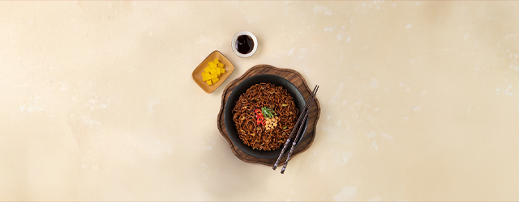

짜짜로니
브랜드 소개
1970년, 삼양짜장면을 시작으로 지금까지 이어지는 삼양의 짜장맛!
Brand Story
1970년부터 짜장라면을 만들던 노하우와 정성으로 짜짜로니를 만들다.‘장’을 볶는다는 의미의 짜장면 기본에 충실한 짜짜로니는 ‘액상 볶음 짜장소스’로 정통 중화요리의 깊은 맛을 전해드립니다.
1970년 3월 4일, '삼양짜장면'이 탄생했습니다. 삼양짜장면은 1985년 4월 짜짜로니로 이어졌고, 출시 2년만에 연간 152만여 상자가 판매되었습니다. 30년이 넘는 세월동안 사랑받고 있는 짜짜로니는 이제 국내를 넘어 해외 시장에서도 인기를 끌고 있습니다.


노하우와 정성으로 짜짜로니를 만들다.
'장'을 볶는다는 의미의 짜장면 기본에 충실한 짜짜로니 '액상 볶음 짜장소스'로 정통 중화요리의 깊은 맛을 전해드립니다.
삼양식품이 선보인 '삼양짜장면'은 소비자들, 특히 아이들에게 많은 인기를 얻었습니다.
짜장 본연의 맛을 살리기 위한 연구 끝에 액상 짜장스프를 개발했고,
짜장면의 1/5 가격으로 짜장 천연의 맛과 향을 즐길 수 있어 누구에게나 사랑 받는 제품이 되었습니다.

- 더욱 풍부해진 짜장의 맛과 풍미
- 면과 소스를 부드럽게 비벼주는 액상소스
- 자극적이지 않고 조화로운 맛
짜짜로니는 국내뿐만 아니라 중국, 베트남, 아랍에미레이트, 캐나다, 홍콩, 미국 등 세계 40여개 국에서 짜짜로니 특유의 고소하고 달달한 짜장 풍미로 해외 소비자들의 입맛을 사로잡아 사랑을 듬뿍 받고 있습니다.
짜짜로니 전체 매출의 약 72%를 수출에서 차지하고 있는 글로벌 주력 상품이기도 합니다.